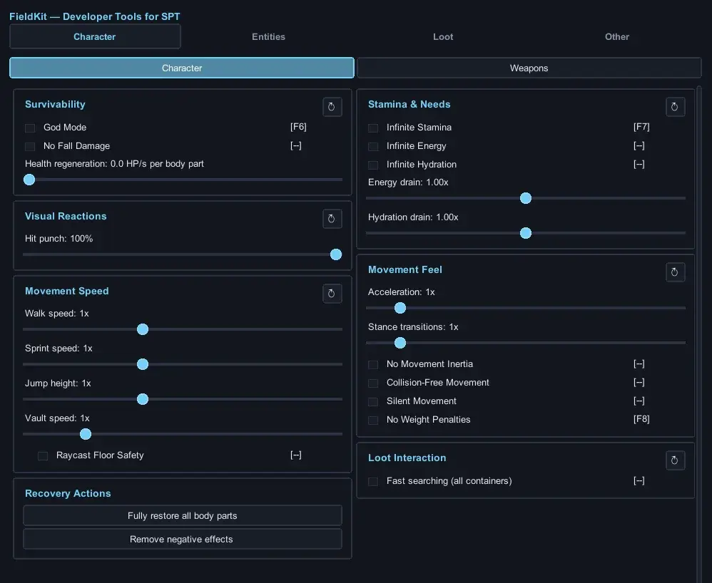
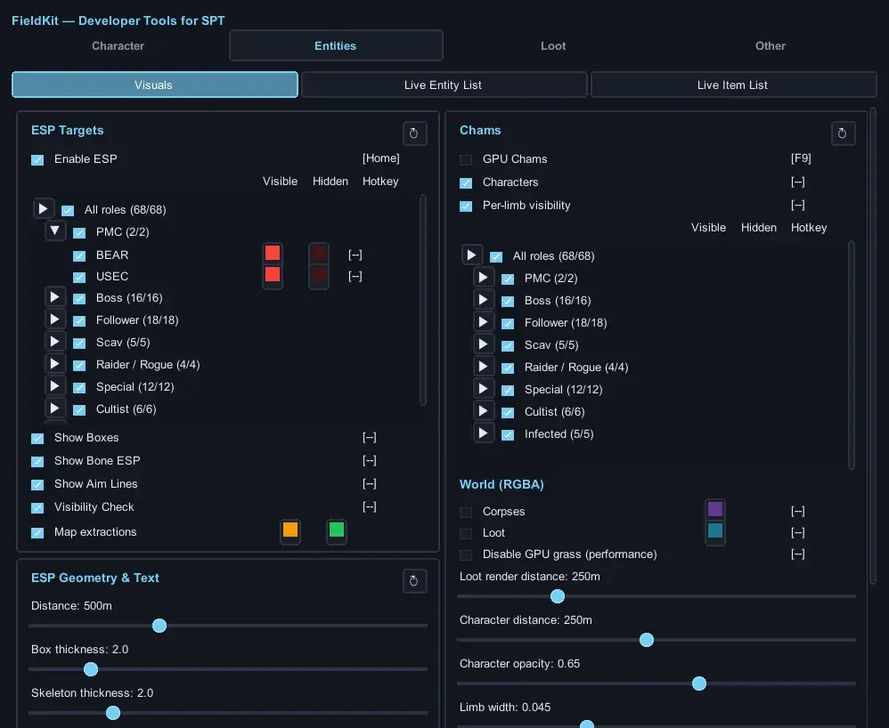

FieldKit - Testing Utility, Item Spawning, Visuals & In-Raid Tools
- Downloads
- 568
- Favourites
- 7
- Mod lists
- 5
FieldKit
FieldKit is an in-raid toolkit for SPT players who want to fool around, test ideas, or develop mods without wasting time on repetitive setup.
Mod development can be frustrating when you wait five minutes to load into a raid, spend another ten minutes crossing the map, and then discover that something needs to be changed and tested again. FieldKit is designed to remove as much of that friction as possible by giving you quick access to the tools you need directly inside a raid.
Usage
- Press
Insertwhile in game to open or close the FieldKit gui menu. - Press
F12to open the BepInEx configuration menu, where FieldKit settings and hotkeys can also be changed.
Features
- ESP that also works in scopes and magnified optics
- Spawn items through a searchable loot catalog
- Unlock and interact with doors
- Pacify AI
- Access and loot living AI inventories
- Use noclip and other movement controls
- Teleport yourself, entities, and loot
- Modify health, stamina, hydration, energy, and other character values
- Control recoil, sway, ergonomics, fire rate, ammunition, and other weapon behavior
- Enable infinite ammo and adjust weapon restrictions
- Inspect players, AI, loot, and other raid entities
- Use chams, labels, tracers, and visualization tools
- Locate extracts, doors, containers, loot, and entities
- Access weapon and entity diagnostics
- Quickly reach locations and reproduce testing scenarios
- Use additional quality-of-life and debugging utilities
Menu


Whether you are developing a mod, investigating game behavior, setting up test scenarios, or simply experimenting, FieldKit aims to make in-raid testing faster, easier, and far less tedious.
Full Feature List
Character — Player
-
Player protection
- God mode
- No fall damage
- Fully restore all body parts
- Remove negative effects
- Health regeneration
- Adjustable visual hit-punch intensity
-
Stamina and survival
- Infinite stamina
- Infinite energy
- Infinite hydration
- Adjustable energy drain
- Adjustable hydration drain
- No weight penalties
-
Movement controls
- Walk-speed multiplier
- Sprint-speed multiplier
- Jump-height multiplier
- Acceleration multiplier
- Vault-speed multiplier
- Stance-transition speed multiplier
- No movement inertia
- Silent movement
- High-speed floor safety
-
Collision-free movement
- Ground-based noclip
- Collision-free flying
- Adjustable flying speed
- Keep the world rendered while noclipping
- Move to the next floor above
- Move to the next floor below
- Configurable floor-navigation hotkeys
-
Searching
- Fast container searching
- Concurrent container searches
Character — Weapon
-
Ammunition
- Infinite magazine ammunition
- Quick magazine packing and unpacking
-
Weapon handling
- Adjustable recoil
- Adjustable weapon sway
- Ergonomics override
- No weapon-weight penalties
- Adjustable ADS speed
- Adjustable reload and weapon-action speed
-
Weapon reliability
- Disable malfunctions
- Disable overheating
- Disable durability loss
-
Firing controls
- Fire-rate multiplier
- Force full-auto fire
- Adjustable accuracy and spread
- Bullets pass through world objects
- Bullets bypass armor
- Explosions on bullet impact
-
Diagnostics
- Live weapon information
- Magazine and chamber status
- Fire-mode information
- Weapon-stat monitoring
Entities — Visuals
-
Character ESP
- PMCs
- Scavs
- Bosses and special AI
- Box ESP
- Animated skeleton ESP
- Aim-direction lines
- Name, health, type, and distance labels
- Adjustable maximum distance
- Adjustable line thickness
- Adjustable font and text outline
-
Visibility checking
- Visible and occluded detection
- Separate visible and occluded colors
- Individual PMC colors
- Individual Scav colors
- Individual boss and special-AI colors
-
Extraction ESP
- Display every extraction point
- Separate color for usable extracts
- Separate color for unavailable extracts
-
Character chams
- PMC chams
- Scav chams
- Boss and special-AI chams
- Per-limb visibility checking
- Limb visibility synchronized with skeleton checks
- Separate visible and occluded colors
- Adjustable maximum distance
- Adjustable opacity
- Scope brightness compensation
-
World visuals
- Corpse chams
- Loose-loot chams
- Custom corpse color
- Custom loose-loot color
- Adjustable loot-render distance
- Grass culling
Entities — Live Lists
-
Live AI list
- Search by name or type
- View AI type and distance
- Teleport yourself to an AI
- Bring an AI to your position
-
Live loose-loot list
- Search by name or template ID
- View item distance
- View item price
- View item template ID
- Teleport yourself to an item
- Bring an item to your position
Loot
-
Item browser
- Search the complete in-game item catalog
- Browse items by category
- Refresh localized item names
- Refresh cached prices
- Select individual items for Loot ESP
-
Item spawning
- Select a quantity
- Spawn items at your feet
- Add items directly to your stash
- Add items directly to your inventory
- Send items through in-game mail
-
Loose-item ESP
- Item boxes
- Item names
- Item distances
- Item prices
- Selected-item highlighting
- Quest-item highlighting
- Adjustable render distance
- Adjustable label size
-
Container ESP
- Display containers containing matching items
- Display matching container contents
- Adjustable scan and render distance
- Adjustable label size
- Custom container color
-
Price filtering
- Minimum price
- Maximum price
- Selected-items-only mode
- Custom price-match color
-
Value visualization
- Value-based color gradient
- Low-value color
- Low-mid-value color
- Mid-value color
- High-mid-value color
- High-value color
-
Proximity grouping
- Group nearby distant items
- Adjustable grouping start distance
- Adjustable group render distance
- Adjustable horizontal radius
- Adjustable vertical separation
- Adjustable group label size
Other
-
AI behavior
- Make all AI friendly
-
Door tools
- Unlock all keyed doors
- Unlock all keycard doors
- Extraction doors remain unchanged
-
Living AI looting
- Loot living AI
- Hold living AI still while looting
-
Vision modes
- Force thermal vision
- Force night vision
- Clean thermal image
- Clean night-vision image
- Adjustable night-vision bloom
-
Face-shield overlay
- Follow equipped face shield
- Force an overlay
- Remove the overlay
-
Diagnostics
- FieldKit performance telemetry
- Live entity inspector
-
Menu customization
- Custom primary color
- Configurable feature hotkeys
- Per-category reset buttons
Version
1.1.0
FieldKit 1.1.0
This update adds new tools for managing and spawning AI during a raid.
New features
- Added a better live list of all AI in the raid.
- Temporarily enable or disable individual AI.
- Make individual AI friendly.
- Kill individual AI or all AI at once.
- Spawn AI at the location you are aiming.
- Choose from supported SPT bot types.
- Spawn bots with their AI disabled.
- Improved AI inspection so bots stop moving properly.
- Improved ESP classification for PMCs, bosses, and followers.
- Followers now appear as a separate subcategory.
- Added a custom menu cursor for better compatibility with other mods.
- Improved build and installation reliability.
Spawning entities
- Spawned bots use natural SPT-generated equipment and loot.
- Bot assets are cached to make later spawns faster.
- Spawn lists now match the AI types available in your SPT installation.
- SPT PMCs no longer incorrectly appear as runtime bosses.
Version
1.0.0
Release